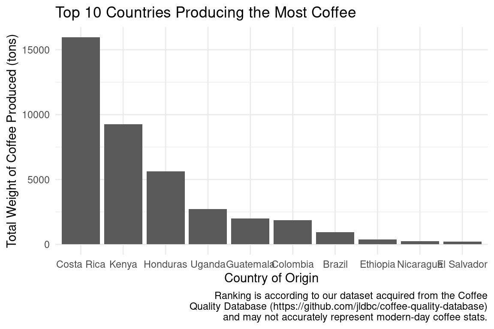

The Best Coffee
Report
Introduction

Coffee is a globally consumed beverage, with a wide variety of coffee beans from different regions available due to our highly interconnected world. Each of these coffee beans possesses a distinct flavor that stems from slight variations. Additionally, various processing techniques are employed during coffee production to enhance the flavors further. Through an examination of these geographic differences and processing and storage methods, our research aims to offer consumers guidance on selecting their ideal coffee. Our research comprises two components.
The first analysis focuses on the factors that impact coffee bean growth and cultivation. The research question is how the altitudes and countries of coffee beans affect the coffee rating (cup points). As we expect the geographical location to be a main factor in affecting the taste of coffee, we expect that beans grown in the same region and altitude will have comparable ratings, while those from different regions and altitudes will exhibit greater taste variation.
The second analysis shifts the focus to coffee processing and storage, specifically, we ask do different methods of processing significantly impact the coffee rating (cup points). We hypothesize that the differences in processing and storage could affect the coffee’s flavor because the humidity is a key factor for coffee bean processing, wet/dry/washed methods change the humidity of the environment the coffee beans are in, what’s more, the duration of storage may also influence the amount of water inside the coffee beans.
Data description
We are using the data set retrieved from https://think.cs.vt.edu/corgis/csv/coffee/. The original github description of the dataset can be found here: https://github.com/rfordatascience/tidytuesday/tree/2e9bd5a67e09b14d01f616b00f7f7e0931515d24/da
ta/2020/2020-07-07
The original creator of this data set is Buzzfeed Data Scientist James LeDoux who collected the data from the Coffee Quality Institute’s review pages in January 2018.
Each observation contains information about the coffee’s country of origin, owner (of the farm), farm name, altitude, region, producer, bag weight, processing method, company (name), and much more logistical information of its source. There are lots of measurements of its taste and quality, such as flavor, aftertaste, acidity, body, balance, uniformity, moisture, sweetness, and color.
Data analysis
Analysis #1:
We aim to test whether variables altitude and country have an impact on the rating scores of coffee. We will be using coffee rating as the dependent variable and country and altitude as independent variables.
\[ H_0: There~is~not~a~significant~relationship~between~altitude~,country,~\\and~coffee~rating. \]
\[ H_a: There~is~a~significant~relationship~between~altitude~,country,~and~coffee~rating \]
We will run a multiple linear regression and compute for the p-value. If the p-value is smaller than our chosen significance level, there is significant evidence for us to reject the null hypothesis.
Using our general knowledge about coffee beans, we think that the relationship between altitude and the rating scores of coffee might be a negative one. Since most good coffee beans are produced in tropical countries, especially in South America and Africa, we deduce that coffee beans grow better in hot climates. Higher altitude would mean a colder and drier environment which may not be suitable for the beans to grow.
First, we wanted to look at the general distribution of the data before performing any regressions. We plotted the total cup point score vs. mean altitude in meters, and chose to show the coffee species although we will not do any analysis with it.
After looking at the cup points vs. altitude graph for all countries, we wanted to see if there was a more obvious correlation between these two variables when we considered faceting on individual countries. However, there are dozens of countries in the data set and we could not have looked at all of them. In order to select 10 countries to look at, we found the top 10 countries in amount of coffee production and plotted this in a bar graph.

Now that we found the 10 countries we wanted to look at, we were ready to fit our linear regression models against altitude and country. We first wanted to look at solely altitude and rating, to see if there was a significant relationship.
# A tibble: 2 × 5
term estimate std.error statistic p.value
<chr> <dbl> <dbl> <dbl> <dbl>
1 (Intercept) 82.6 0.176 469. 0
2 altitude -0.00000964 0.0000147 -0.655 0.513As shown by the p-value of the altitude, we can see that there is no significant relationship between altitude and coffee cup rating.
Next, we fit an additive model to see if each variable (altitude and 10 countries) independently makes a statistically significant impact on the coffee cup rating.
# A tibble: 11 × 5
term estimate std.error statistic p.value
<chr> <dbl> <dbl> <dbl> <dbl>
1 (Intercept) 82.7 0.396 209. 0
2 altitude -0.00000428 0.0000140 -0.305 0.761
3 countryColombia 0.635 0.529 1.20 0.231
4 countryCosta Rica 0.0786 0.723 0.109 0.913
5 countryEl Salvador 0.385 1.00 0.385 0.701
6 countryEthiopia 3.34 0.855 3.91 0.000103
7 countryGuatemala -0.771 0.513 -1.50 0.133
8 countryHonduras -3.48 0.687 -5.07 0.000000537
9 countryKenya 1.52 0.980 1.55 0.122
10 countryNicaragua -2.78 1.05 -2.63 0.00866
11 countryUganda 0.654 0.794 0.824 0.410 From the additive model, we can see that altitude is not a statistically significant variable, and only some countries are. We decided to refit a model using only the significant variables, being Brazil (represented as the intercept because it was used as the base), Ethiopia, Honduras, and Nicaragua.
# A tibble: 4 × 5
term estimate std.error statistic p.value
<chr> <dbl> <dbl> <dbl> <dbl>
1 (Intercept) 82.7 0.621 133. 1.99e-193
2 countryEthiopia 3.34 1.34 2.49 1.38e- 2
3 countryHonduras -3.48 1.08 -3.23 1.46e- 3
4 countryNicaragua -2.80 1.65 -1.70 9.08e- 2From here, we can visually see that the coffee being from Ethiopia makes a positive impact on the score, while coffee made from Honduras tends to have lower ratings. Interestingly, when we remove the other variables, Nicaragua as the country of origin no longer becomes statistically significant in terms of its impact towards the coffee rating.
Next, we fitted an interactive multilinear regression model to see if there is any dependence between altitude and each country.
# A tibble: 20 × 5
term estimate std.error statistic p.value
<chr> <dbl> <dbl> <dbl> <dbl>
1 (Intercept) 82.7 0.549 151. 0
2 altitude 0.0000390 0.000374 0.104 0.917
3 countryColombia 0.550 1.26 0.436 0.663
4 countryCosta Rica -1.75 2.07 -0.845 0.398
5 countryEl Salvador -2.13 11.6 -0.183 0.855
6 countryEthiopia -7.69 9.31 -0.826 0.409
7 countryGuatemala -0.717 0.641 -1.12 0.264
8 countryHonduras -13.5 9.99 -1.35 0.176
9 countryKenya 0.437 3.09 0.142 0.888
10 countryNicaragua -2.83 1.16 -2.44 0.0148
11 countryUganda -4.72 5.02 -0.939 0.348
12 altitude:countryColombia 0.0000391 0.000785 0.0497 0.960
13 altitude:countryCosta Rica 0.00131 0.00143 0.920 0.358
14 altitude:countryEl Salvador 0.00187 0.00869 0.216 0.829
15 altitude:countryEthiopia 0.00608 0.00513 1.18 0.237
16 altitude:countryGuatemala -0.0000458 0.000374 -0.122 0.903
17 altitude:countryHonduras 0.00703 0.00700 1.00 0.315
18 altitude:countryKenya 0.000681 0.00191 0.357 0.721
19 altitude:countryNicaragua -0.0000310 0.000376 -0.0826 0.934
20 altitude:countryUganda 0.00336 0.00313 1.07 0.284 We can see that there is no significant interaction between altitude and country by looking at the p-values of this regression model.
Analysis #2:
We are testing for whether the processing and storage method of the coffee beans will have an impact on the rating scores of the coffee. We will use coffee rating as the dependent variable and processing method as the independent variable.
Given our limited knowledge about coffee bean processing methods, we believe that the different methods product different qualities of coffee. These methods include Natural/Dry, Pulped natural / honey, Semi-washed / Semi-pulped, and Washed / Wet. We first visualized the difference between the scores for all different processing types using a box-plot and analyze the distributions in the final report.
\[ H_0: There~is~not~a~significant~relationship~between~processing~method~and~coffee~rating. \]
\[ H_a: There~is~a~significant~relationship~between~processing~method~and~coffee~rating \]
We will run a multiple linear regression and compute for the p-value. If the p-value is smaller than our chosen significance level, there is significant evidence for us to reject the null hypothesis.
If the p-value we compute is smaller than our chosen significance level of 0.05, there is significant evidence for us to reject the null hypothesis that the Natural / Dry processing method results in the same coffee score as using the Washed / Wet processing method.
# A tibble: 5 × 5
term estimate std.error statistic p.value
<chr> <dbl> <dbl> <dbl> <dbl>
1 (Intercept) 82.7 0.193 429. 0
2 processing_methodOther -1.38 0.556 -2.47 1.35e-2
3 processing_methodPulped natural / honey 0.133 0.891 0.149 8.81e-1
4 processing_methodSemi-washed / Semi-pulp… -0.106 0.407 -0.260 7.95e-1
5 processing_methodWashed / Wet -0.722 0.216 -3.35 8.36e-4Evaluation of significance
For our first analysis that tested whether altitude and countries have an impact on the rating scores of coffee, we found the p-value of each variable in our linear regression models. First, we calculated the best line of fit between the coffee rating and altitude. This produced a p-value of of 0.671, which is greater than our selected significance level of 0.05. Therefore, we determined that there is no statistically significant relationship between altitude and the rating of coffee.
Next, we generated an additive model including the altitude and multiple countries. We decided to look at a small subset of countries, chosen by their amount of coffee production. We selected Brazil, Colombia, Peru, Ethiopia, Honduras, Guatemala, Costa Rica, Mexico, Nicaragua, and Kenya, however some countries were not included in the regression, possibly due to missing values. We plan to fix this in the final report. The following countries had regression p-values below 0.05: Ethiopia, Honduras, Mexico, and Nicaragua, so we determined that originating from these four countries have a statistically significant impact on the coffee rating.
Lastly, we looked at the interactive model for the same variables. We found that the only country that still had a statistically significant impact on the coffee rating is Nicaragua with a p-value of 0.01 (less than the 0.05 significance level). This implies that there is only a significant interaction between originating from Nicaragua on the coffee rating. This is because in our additive model, each predictor variable is evaluated independently of the other variables, so a variable that is significant in an additive model may not be significant in an interaction model if its effect is modified by the presence of other variables.
For our second analysis, we tested whether the processing and storage method of the coffee beans have an impact on the rating scores of the coffee. When performing a linear regression on the coffee rating vs. the processing method, we found that interestingly, only the Washed / Wet processing method and methods under Other have a significant impact on the coffee rating. The Pulped natural / honey and Semi-washed / Semi-pulped processing methods had very high p-values, so it seems like their fluctuations in coffee rating are mostly attributed to randomness. We are not sure how to tell the p-value of using the Natural / Dry processing method besides refactoring the order and redoing the linear regression, but this is something we plan to improve in our final report.
Interpretation and conclusions
For analysis 1, we explored three different regression models. First, we looked at the factor altitude and built a single-variable linear regression model:
\[ \widehat{coffee~rating} = 82.575 - 0.0000096 \times altitude \]
This means that for every one-unit increase in altitude, the estimated coffee rating decreases by 0.0000096 units, assuming all other factors are held constant. In other words, this model suggests that there is a negative relationship between coffee rating and altitude. However, it seems that altitude does not have influence the rating but a lot since it has a very small coefficient.
Then, we added the factors of countries. We selected the top 10 coffee production countries in the world. Because a large part of these countries’ agriculture and economics rely on coffee bean productions, we think that these countries might have effective strategies to grow coffee beans with good flavors and we wonder if that would be a significant factor influencing the rating.
\[ \begin{split} \widehat{coffee~rating} = 82.736 - 0.000004 \times altitude + 0.635 \times Colombia \\ + 0.079 \times Costa~Rica + 0.385 \times El~Salvador \\ + 3.343 \times Ethiopia - 0.771 \times Guatemala \\ - 3.482 \times Honduras + 1.516 \times Kenya \\ - 2.778 \times Nicaragua + 0.654 \times Uganda \end{split} \]The coefficients in front of each country indicate the change in coffee rating associated with a one-unit increase in that country’s contribution to the coffee blend, while holding all other variables constant.
Based on the significance test, we reject our null hypothesis that there is no significant relationship between altitude, country and coffee rating. That means we there is a significant interaction between altitude, country, and coffee rating. Upon further analysis, we examined altitude alone and got a p-value that is higher than the significance level, which means it does not have a relationship with the coffee rating. That means that we could not evaluate the quality of coffee based on altitude solely. We need to take consideration of country while evaluating the quality of coffee. The specific countries that produce statistically significant results are Brazil (base case, represented by intercept), Ethiopia, Honduras, and Nicaragua. When fitting another regression model with only these significant variables, we get the following formula:
\[ \begin{split} \widehat{coffee~rating} = 82.731 + 3.340 \times Ethiopia - 3.484 \times Honduras - 2.805 \times Nicaragua \end{split} \]
Interestingly, Nicaragua’s p-value rises above the significance value of 0.05 after limiting the regression to these four variables only. This may signify that Nicaragua is on the border of being statistically significant. However, the other three countries still have p-values less than 0.05, so we can reject the null hypothesis as there does appear to be a significant interaction between at least three countries and the coffee rating.
After performing our second analysis, we can confidently conclude that using the Washed / Wet processing method has an impact on the coffee rating due to a very small p-value of 0.0008. We also found that using other processing methods besides the four main methods listed also have a statistically significant impact, although we are less confident in this result because the p-value of above 0.01 is relativley much higher. We also cannot be sure that these processing methods directly cause a change in coffee rating, especially since we do not know what methods are included in the Other category and if there are confounding factors that may be causing Other to have a small p-value. However, we have strong evidence to conclude that differences in processing and storage affect the coffee’s flavor, specifically processing with high humidity and water content.
Limitations
There are several limitations to this coffee_rating dataset. First of all, this dataset covers coffee reviews from January 2012 to July 2019. Therefore, it may not be representative of coffee ratings from other time periods, such as more recent years. Secondly, the data was collected from the Coffee Quality Institute (CQI) database, which includes information about coffee competitions, samples, and scores. This limits the source of information and may it be biased towards specialty coffee, which means we cannot extrapolate our research results to the entire population of coffee drinkers. Moreover, the dataset has missing values in some columns. When we were cleaning the data, we had to eliminate the rows with any missing values, which significantly reduced the amount of information we could use. The number of confounding variables we have are also limited. There is a total of 16 variables included, which may not capture all the factors that contribute to a coffee’s quality. Additionally, there is the possibility of potential bias. The dataset may be biased towards certain regions, as it includes a large number of samples from countries such as Colombia, Ethiopia, and Brazil. It may be biased towards certain types of coffee, as it includes a higher proportion of Arabica beans compared to Robusta. Last but not least, the pricing of different coffee is an important metric associated with the quality of coffee. We would be interested to investigate the relationship between price and quality as well. Sadly, this is a variable that is not included in this dataset.
Acknowledgments
We would like to express out gratitude to the following individuals and organizations for their contributions to this report:
- Our mentor Wei Yang for her guidance and support throughout the project.
- All the group members of skillfull-hitmontop for their valuable input and feedback on the research.